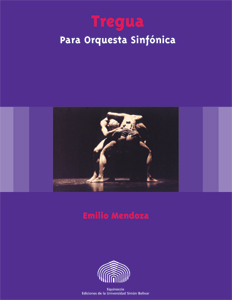
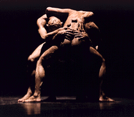
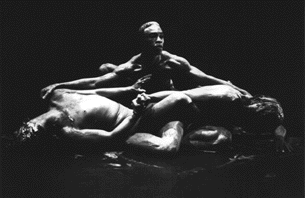

 para Orquesta Sinfónica
(2 Flt. + G / 2 Ob. + Cor. Ang. / 2 Cla. Sib /
Cla. Bass. Sib / 2 Fgt. / Ctr. Fgt. /
2 Cor. Fa / 2 Tr. Sib / 2 Trbni. / Tuba Bass. Fa /
12 Vlni. I / 12 Vlni. II / 8 Vle. / 8 Vc. / 8 Cb.).
1982 rev. 2007 / 13 min. 24 sec.
Pertenece como segundo movimiento a la obra para orquesta
"Extinción", y además existe una versión en la cual se le agregó
una parte coral con texto del poema homónimo del autor.
  Tregua por el Ballet
Coreoarte , fotos: Jean Gros-Abadie, 1987
Distinciones
Esta composición fue encargada por el Ateneo de Caracas
para conmemorar su 50º aniversario en 1981 y estrenada por la
Orquesta Sinfónica Municipal, dir. Alfredo Rugeles, en el I.
Festival de Músic Contemporánea, Ateneo de Caracas, Caracas,
1982.
Ejecución por la Radio Kamerorkest, Concertgebouw,
Amsterdam, Holanda, Dir.: Ernest Bour, dentro de la serie
"Musica Nova", (17/10/1982).
La obra fue coreografiada por Carlos Orta para la
compañía de danza Ballet Coreoarte, Caracas, en 1986, y ha
sido ejecutada en Alemania, Francia, EUA y Venezuela.
Partitura Tregua. Caracas: Equinoccio, Ediciones de la Universidad
Simón Bolívar, 2008.
Grabación
CD Mundos - Emilio Mendoza.
Caracas: ArteMus, 1998.
Referencias: Helena
Sassone, (textos) Roland Streuli. La
Danza en Venezuela, Caracas: Armitano Editores, 1989,
p. 219-223.
Tregua es una pieza lenta
donde la expresión se manifiesta principalmente a través de la
estructuración del color orquestal y la sutileza tímbrica.
Sugiere el descanso tenso, la pausa limitada por la lucha
incansable, quizás el último receso merecido antes de la muerte.
Un cerrar de ojos leve sin soltar
la vigilancia
por todo lo que acecha,
un deseo de paz atrapado por la incertidumbre de lo se
espera. El compositor se basó en el siguiente poema, parte
de su colección "Resonancias":
EXTINCIÓN
Sombras de luna,
más profundas
que en noche oscura
traen sospechas,
presión en mi acecho,
( . . . la muerte segura . . . )